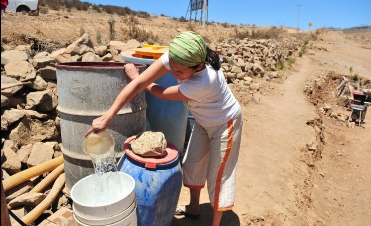

1981
Durante el régimen militar de Agusto Pinochet, se creó el Código de Aguas, donde particulares inscribieron de manera gratuita los derechos para poder utilizar este recurso de por vida.
Es importante tener claro que Chile es uno de los países que tiene una privatización casi completa de sus aguas.